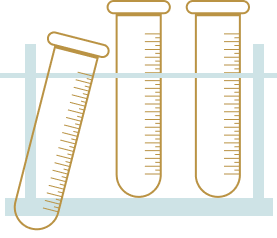

Being creative is such a large part of who I am, whether I’m involved in a work project, making gifts, volunteering my skills for my children’s school, or decorating cakes, design and science have always followed me. I believe that design could change the world. For me designing is to take on a challenge or a need and figure out how to solve it.
When I was a child, I would spend countless hours watching cloud formations , collecting and painting rocks or being curious about why soda fizz when you open it. So when it was time for me to decide on a major, I was uncertain between the two paths. Eventually I choose the route to Chemistry. I got masters degree, and started working in research lab.
 It's been a decade since I graduated but I was feeling less satisfied with the daily work in the lab. The experimental design was great, but the actual leg work in the lab was tiresome. Dealing with that all day long just wasn’t what I wanted to do with my life. I believe that science and design have similarities . They both involve in extensive research, analytical thinking, and logic in addition to the creative aspect.
From all those years I spend in research lab, I learned that Chemistry and Design to have one thing in common, Structure. If you review a chemical structure, one slight mistake in connecting a single molecular structure will offset a formulation. This is also true with Design, one small error in the design process can change the outcome of what the desired result should be. That's how i explore design, it's an evolutionary process.
I love design and I love learning about design, anything and everything. It is the one thing in my life that calms me and excites me at the same time. I take design as challenge and through creative processes that involve studying people to figure out what is lacking in their lives and what is needed, that let me design a product that positively impact and serve the greater good and give me a new, humbling perspective on my own goals.
If you’re passionate about a strong UX design and want to learn more about me, please don’t hesitate to get in touch.
~ Wajiha Ahmed ~